2025 Higher Computing Science marking instructions
Source: Scottish Qualifications Authority (SQA) / Qualifications Scotland. This is a StemInteract HTML companion, not an official HTML edition. Selectable text is supplied alongside original page images. Use the images or original PDF for equations, powers, fractions, vector notation, tables and diagrams; text extraction cannot fully preserve mathematical layout.
Jump to a question
PDF page 1
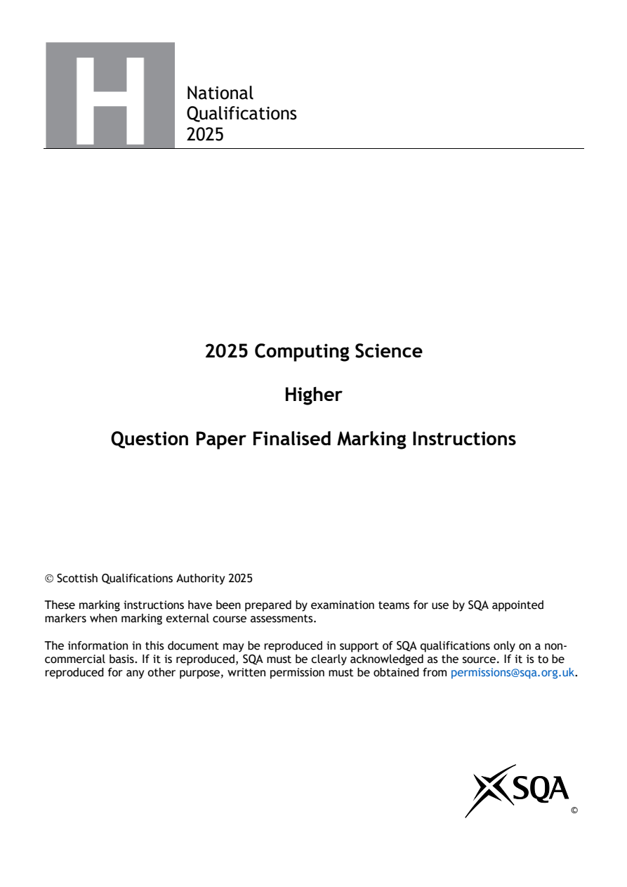
Selectable page text
National
Qualifications
2025
2025 Computing Science
Higher
Question Paper Finalised Marking Instructions
Scottish Qualifications Authority 2025
These marking instructions have been prepared by examination teams for use by SQA appointed
markers when marking external course assessments.
The information in this document may be reproduced in support of SQA qualifications only on a non-
commercial basis. If it is reproduced, SQA must be clearly acknowledged as the source. If it is to be
reproduced for any other purpose, written permission must be obtained from permissions@sqa.org.uk.
©PDF page 2
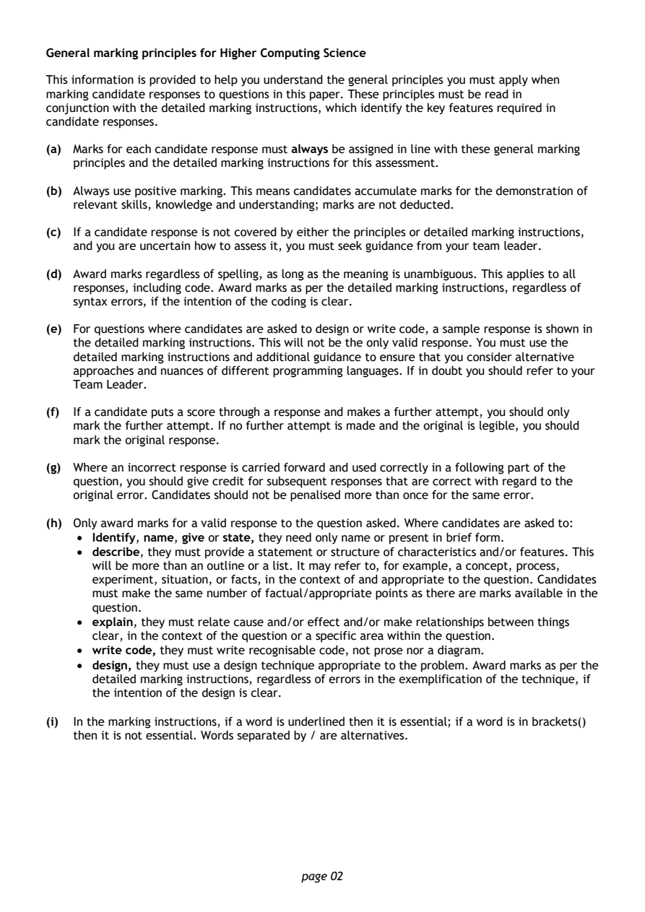
Selectable page text
General marking principles for Higher Computing Science
This information is provided to help you understand the general principles you must apply when
marking candidate responses to questions in this paper. These principles must be read in
conjunction with the detailed marking instructions, which identify the key features required in
candidate responses.
(a) Marks for each candidate response must always be assigned in line with these general marking
principles and the detailed marking instructions for this assessment.
(b) Always use positive marking. This means candidates accumulate marks for the demonstration of
relevant skills, knowledge and understanding; marks are not deducted.
(c) If a candidate response is not covered by either the principles or detailed marking instructions,
and you are uncertain how to assess it, you must seek guidance from your team leader.
(d) Award marks regardless of spelling, as long as the meaning is unambiguous. This applies to all
responses, including code. Award marks as per the detailed marking instructions, regardless of
syntax errors, if the intention of the coding is clear.
(e) For questions where candidates are asked to design or write code, a sample response is shown in
the detailed marking instructions. This will not be the only valid response. You must use the
detailed marking instructions and additional guidance to ensure that you consider alternative
approaches and nuances of different programming languages. If in doubt you should refer to your
Team Leader.
(f) If a candidate puts a score through a response and makes a further attempt, you should only
mark the further attempt. If no further attempt is made and the original is legible, you should
mark the original response.
(g) Where an incorrect response is carried forward and used correctly in a following part of the
question, you should give credit for subsequent responses that are correct with regard to the
original error. Candidates should not be penalised more than once for the same error.
(h) Only award marks for a valid response to the question asked. Where candidates are asked to:
• Identify, name, give or state, they need only name or present in brief form.
• describe, they must provide a statement or structure of characteristics and/or features. This
will be more than an outline or a list. It may refer to, for example, a concept, process,
experiment, situation, or facts, in the context of and appropriate to the question. Candidates
must make the same number of factual/appropriate points as there are marks available in the
question.
• explain, they must relate cause and/or effect and/or make relationships between things
clear, in the context of the question or a specific area within the question.
• write code, they must write recognisable code, not prose nor a diagram.
• design, they must use a design technique appropriate to the problem. Award marks as per the
detailed marking instructions, regardless of errors in the exemplification of the technique, if
the intention of the design is clear.
(i) In the marking instructions, if a word is underlined then it is essential; if a word is in brackets()
then it is not essential. Words separated by / are alternatives.
page 02PDF page 3
Question 1Question 2Question 3Question 4Question 5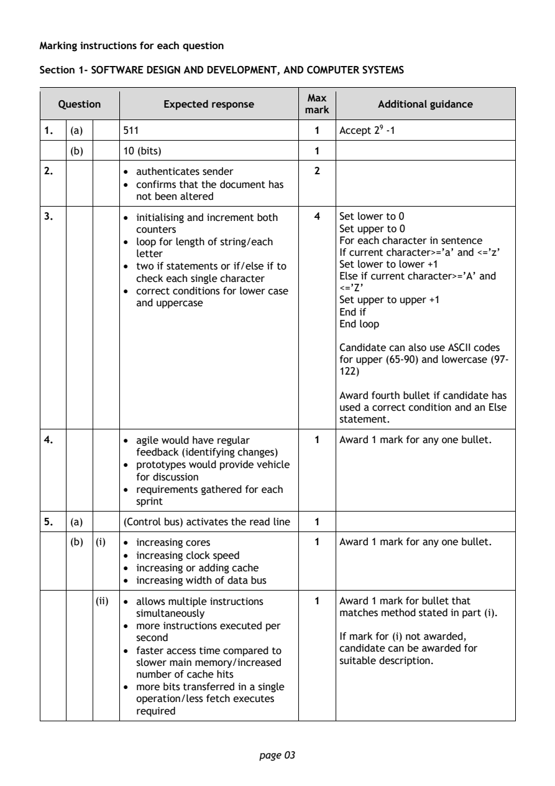
Selectable page text
Marking instructions for each question
Section 1- SOFTWARE DESIGN AND DEVELOPMENT, AND COMPUTER SYSTEMS
Max
Question Expected response Additional guidance
mark
1. (a) 511 1 Accept 29 -1
(b) 10 (bits) 1
2. • authenticates sender 2
• confirms that the document has
not been altered
3. • initialising and increment both 4 Set lower to 0
counters Set upper to 0
• loop for length of string/each For each character in sentence
letter If current character>=’a’ and <=’z’
• two if statements or if/else if to Set lower to lower +1
check each single character Else if current character>=’A’ and
• correct conditions for lower case <=’Z’
and uppercase Set upper to upper +1
End if
End loop
Candidate can also use ASCII codes
for upper (65-90) and lowercase (97-
122)
Award fourth bullet if candidate has
used a correct condition and an Else
statement.
4. • agile would have regular 1 Award 1 mark for any one bullet.
feedback (identifying changes)
• prototypes would provide vehicle
for discussion
• requirements gathered for each
sprint
5. (a) (Control bus) activates the read line 1
(b) (i) • increasing cores 1 Award 1 mark for any one bullet.
• increasing clock speed
• increasing or adding cache
• increasing width of data bus
(ii) • allows multiple instructions 1 Award 1 mark for bullet that
simultaneously matches method stated in part (i).
• more instructions executed per
second If mark for (i) not awarded,
• faster access time compared to candidate can be awarded for
slower main memory/increased suitable description.
number of cache hits
• more bits transferred in a single
operation/less fetch executes
required
page 03PDF page 4
Question 6Question 7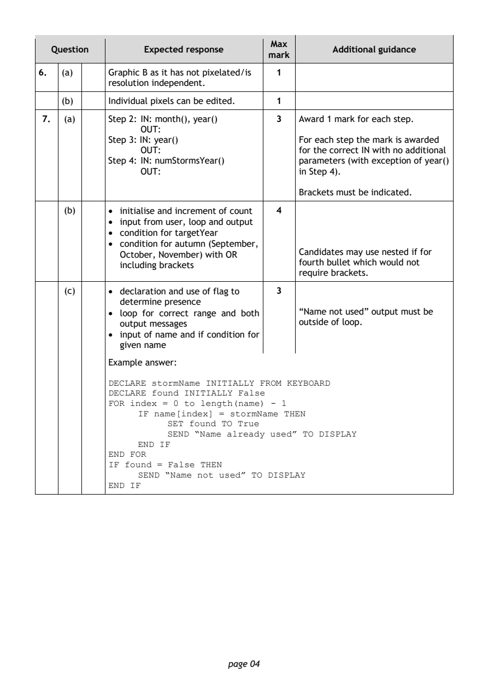
Selectable page text
Max
Question Expected response Additional guidance
mark
6. (a) Graphic B as it has not pixelated/is 1
resolution independent.
(b) Individual pixels can be edited. 1
7. (a) Step 2: IN: month(), year() 3 Award 1 mark for each step.
OUT:
Step 3: IN: year() For each step the mark is awarded
OUT: for the correct IN with no additional
Step 4: IN: numStormsYear() parameters (with exception of year()
OUT: in Step 4).
Brackets must be indicated.
(b) • initialise and increment of count 4
• input from user, loop and output
• condition for targetYear
• condition for autumn (September,
October, November) with OR Candidates may use nested if for
including brackets fourth bullet which would not
require brackets.
(c) • declaration and use of flag to 3
determine presence
• loop for correct range and both “Name not used” output must be
output messages outside of loop.
• input of name and if condition for
given name
Example answer:
DECLARE stormName INITIALLY FROM KEYBOARD
DECLARE found INITIALLY False
FOR index = 0 to length(name) - 1
IF name[index] = stormName THEN
SET found TO True
SEND “Name already used” TO DISPLAY
END IF
END FOR
IF found = False THEN
SEND “Name not used” TO DISPLAY
END IF
page 04PDF page 5
Question 8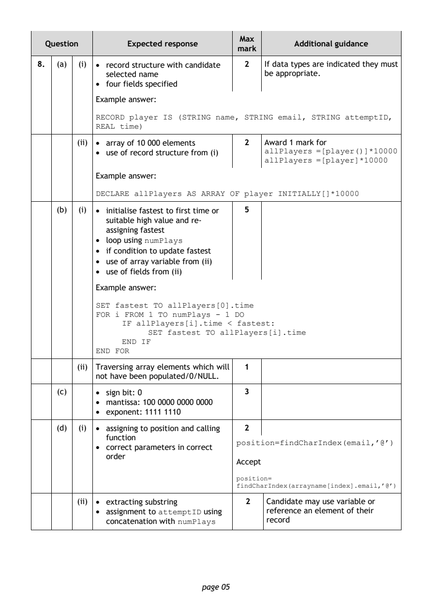
Selectable page text
Max
Question Expected response Additional guidance
mark
8. (a) (i) • record structure with candidate 2 If data types are indicated they must
selected name be appropriate.
• four fields specified
Example answer:
RECORD player IS (STRING name, STRING email, STRING attemptID,
REAL time)
(ii) • array of 10 000 elements 2 Award 1 mark for
• use of record structure from (i) allPlayers =[player()]*10000
allPlayers =[player]*10000
Example answer:
DECLARE allPlayers AS ARRAY OF player INITIALLY[]*10000
(b) (i) • initialise fastest to first time or 5
suitable high value and re-
assigning fastest
• loop using
numPlays
• if condition to update fastest
• use of array variable from (ii)
• use of fields from (ii)
Example answer:
SET fastest TO allPlayers[0].time
FOR i FROM 1 TO numPlays - 1 DO
IF allPlayers[i].time < fastest:
SET fastest TO allPlayers[i].time
END IF
END FOR
(ii) Traversing array elements which will 1
not have been populated/0/NULL.
(c) • sign bit: 0 3
• mantissa: 100 0000 0000 0000
• exponent: 1111 1110
(d) (i) • assigning to position and calling 2
function
• correct parameters in correct position=findCharIndex(email,’@’)
order
Accept
position=
findCharIndex(arrayname[index].email,’@’)
(ii) • extracting substring 2 Candidate may use variable or
• assignment to using reference an element of their
attemptID
concatenation with
numPlays
record
page 05PDF page 6
Question 9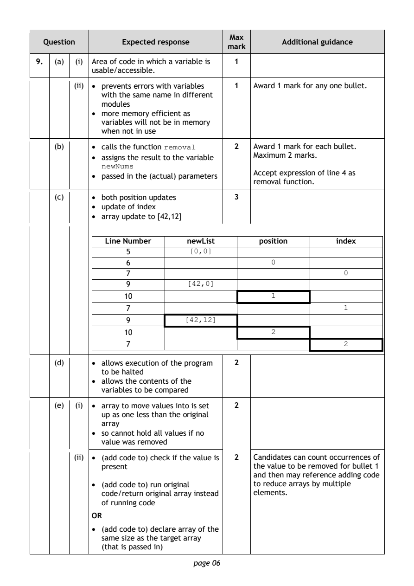
Selectable page text
Max
Question Expected response Additional guidance
mark
9. (a) (i) Area of code in which a variable is 1
usable/accessible.
(ii) • prevents errors with variables 1 Award 1 mark for any one bullet.
with the same name in different
modules
• more memory efficient as
variables will not be in memory
when not in use
(b) • calls the function 2 Award 1 mark for each bullet.
removal
• assigns the result to the variable Maximum 2 marks.
newNums
Accept expression of line 4 as
• passed in the (actual) parameters
removal function.
(c) • both position updates 3
• update of index
• array update to [42,12]
Line Number newList position index
5
[0,0]
6
0
7
0
9
[42,0]
10
1
7
1
9
[42,12]
10
2
7
2
(d) • allows execution of the program 2
to be halted
• allows the contents of the
variables to be compared
(e) (i) • array to move values into is set 2
up as one less than the original
array
• so cannot hold all values if no
value was removed
(ii) • (add code to) check if the value is 2 Candidates can count occurrences of
present the value to be removed for bullet 1
and then may reference adding code
• (add code to) run original to reduce arrays by multiple
code/return original array instead elements.
of running code
OR
• (add code to) declare array of the
same size as the target array
(that is passed in)
page 06PDF page 7
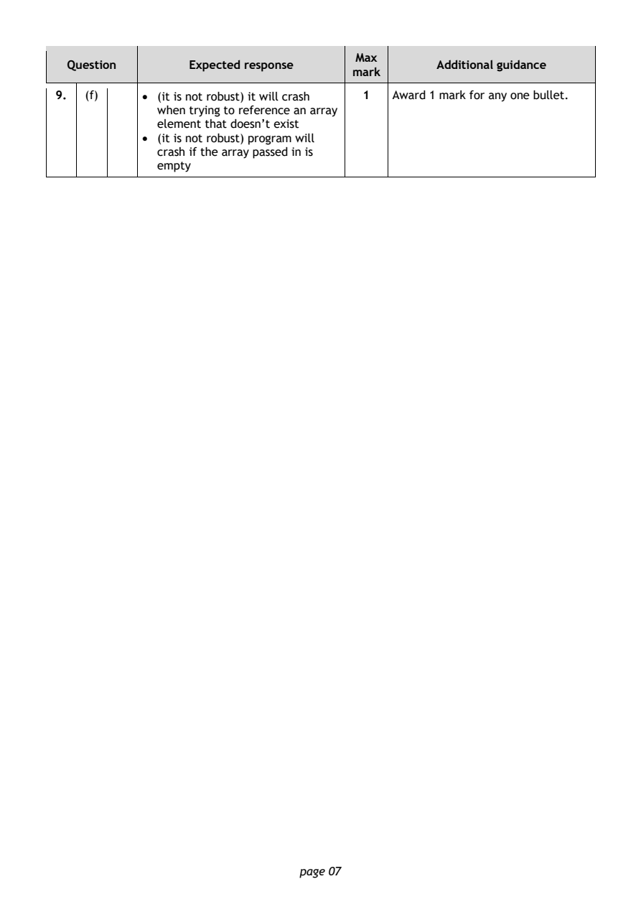
Selectable page text
Max
Question Expected response Additional guidance
mark
9. (f) • (it is not robust) it will crash 1 Award 1 mark for any one bullet.
when trying to reference an array
element that doesn’t exist
• (it is not robust) program will
crash if the array passed in is
empty
page 07PDF page 8
Question 10Question 11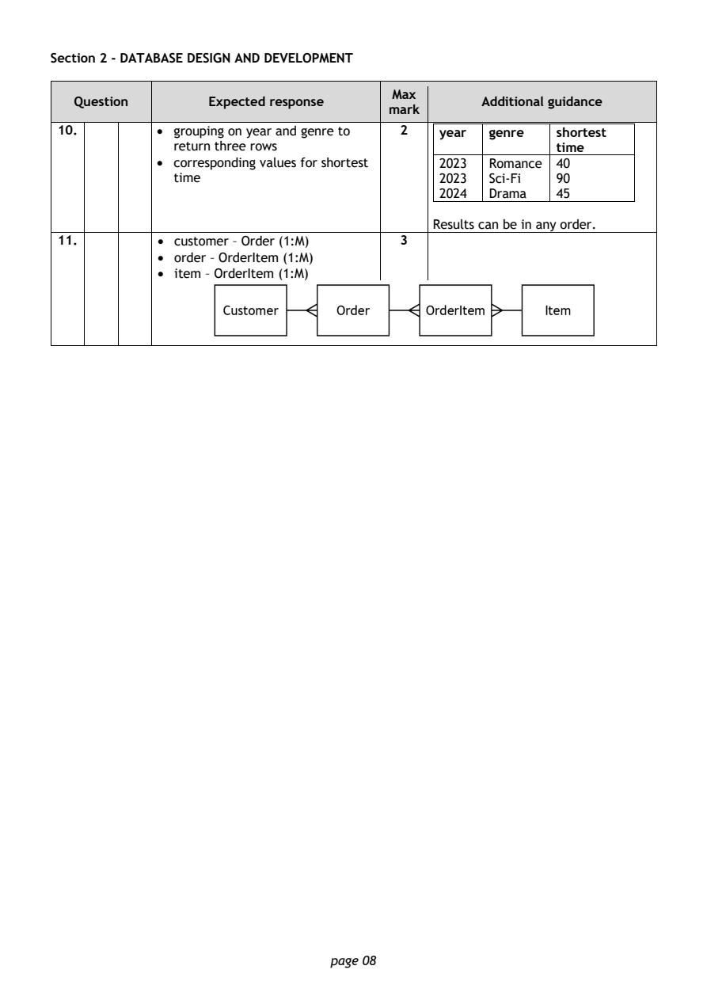
Selectable page text
Section 2 - DATABASE DESIGN AND DEVELOPMENT
Max
Question Expected response Additional guidance
mark
10. • grouping on year and genre to 2 year genre shortest
return three rows time
• corresponding values for shortest 2023 Romance 40
time 2023 Sci-Fi 90
2024 Drama 45
Results can be in any order.
11. • customer – Order (1:M) 3
• order – OrderItem (1:M)
• item – OrderItem (1:M)
page 08PDF page 9
Question 12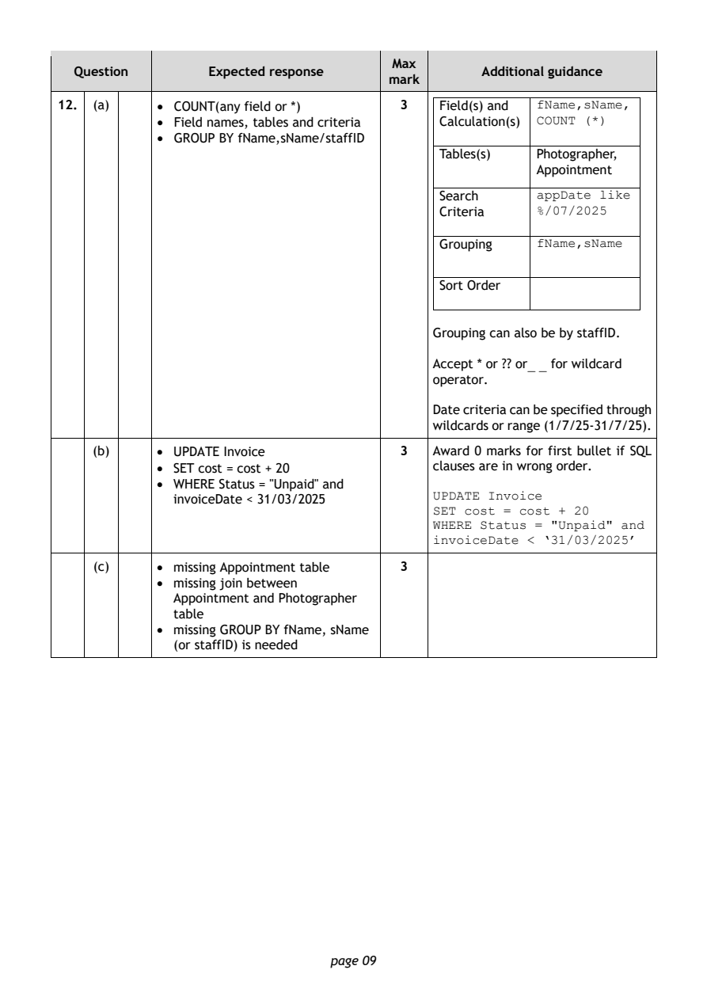
Selectable page text
Max
Question Expected response Additional guidance
mark
12. (a) • COUNT(any field or *) 3 Field(s) and
fName,sName,
• Field names, tables and criteria Calculation(s) COUNT (*)
• GROUP BY fName,sName/staffID
Tables(s) Photographer,
Appointment
Search
appDate like
Criteria %/07/2025
Grouping
fName,sName
Sort Order
Grouping can also be by staffID.
Accept * or ?? or for wildcard
_ _
operator.
Date criteria can be specified through
wildcards or range (1/7/25-31/7/25).
(b) • UPDATE Invoice 3 Award 0 marks for first bullet if SQL
• SET cost = cost + 20 clauses are in wrong order.
• WHERE Status = "Unpaid" and
invoiceDate < 31/03/2025 UPDATE Invoice
SET cost = cost + 20
WHERE Status = "Unpaid" and
invoiceDate < ‘31/03/2025’
(c) • missing Appointment table 3
• missing join between
Appointment and Photographer
table
• missing GROUP BY fName, sName
(or staffID) is needed
page 09PDF page 10
Question 13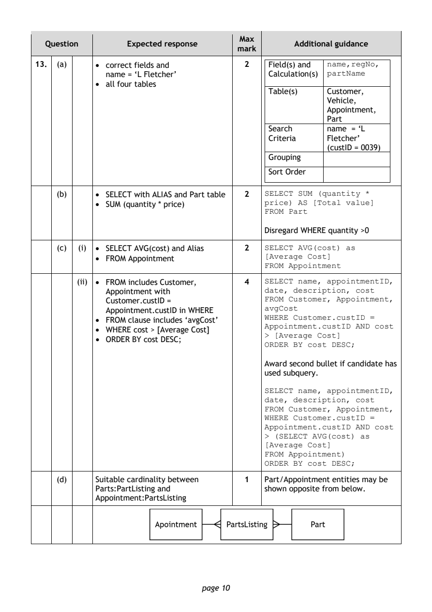
Selectable page text
Max
Question Expected response Additional guidance
mark
13. (a) • correct fields and 2 Field(s) and
name,regNo,
name = ‘L Fletcher’ Calculation(s) partName
• all four tables
Table(s) Customer,
Vehicle,
Appointment,
Part
Search name = ‘L
Criteria Fletcher’
(custID = 0039)
Grouping
Sort Order
(b) • SELECT with ALIAS and Part table 2 SELECT SUM (quantity *
• SUM (quantity * price) price) AS [Total value]
FROM Part
Disregard WHERE quantity >0
(c) (i) • SELECT AVG(cost) and Alias 2 SELECT AVG(cost) as
• FROM Appointment [Average Cost]
FROM Appointment
(ii) • FROM includes Customer, 4 SELECT name, appointmentID,
Appointment with date, description, cost
Customer.custID = FROM Customer, Appointment,
Appointment.custID in WHERE avgCost
• FROM clause includes ‘avgCost’ WHERE Customer.custID =
• WHERE cost > [Average Cost] Appointment.custID AND cost
• ORDER BY cost DESC; > [Average Cost]
ORDER BY cost DESC;
Award second bullet if candidate has
used subquery.
SELECT name, appointmentID,
date, description, cost
FROM Customer, Appointment,
WHERE Customer.custID =
Appointment.custID AND cost
> (SELECT AVG(cost) as
[Average Cost]
FROM Appointment)
ORDER BY cost DESC;
(d) Suitable cardinality between 1 Part/Appointment entities may be
Parts:PartListing and shown opposite from below.
Appointment:PartsListing
page 10PDF page 11
Question 14Question 15Question 16Question 17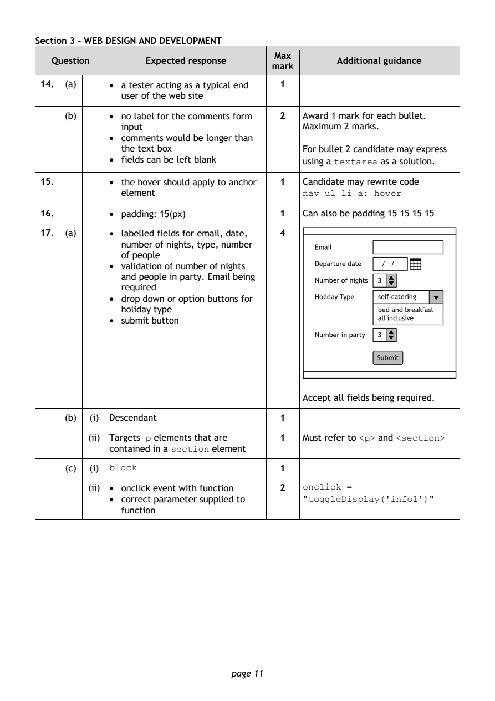
Selectable page text
Section 3 - WEB DESIGN AND DEVELOPMENT
Max
Question Expected response Additional guidance
mark
14. (a) • a tester acting as a typical end 1
user of the web site
(b) • no label for the comments form 2 Award 1 mark for each bullet.
input Maximum 2 marks.
• comments would be longer than
the text box For bullet 2 candidate may express
• fields can be left blank using a as a solution.
textarea
15. • the hover should apply to anchor 1 Candidate may rewrite code
element
nav ul li a: hover
16. • padding: 15(px) 1 Can also be padding 15 15 15 15
17. (a) • labelled fields for email, date, 4
number of nights, type, number
of people
• validation of number of nights
and people in party. Email being
required
• drop down or option buttons for
holiday type
• submit button
Accept all fields being required.
(b) (i) Descendant 1
(ii) Targets elements that are 1 Must refer to and
p <p> <section>
contained in a element
section
(c) (i) 1
block
(ii) • onclick event with function 2 onclick =
• correct parameter supplied to
"toggleDisplay('info1')"
function
page 11PDF page 12
Question 18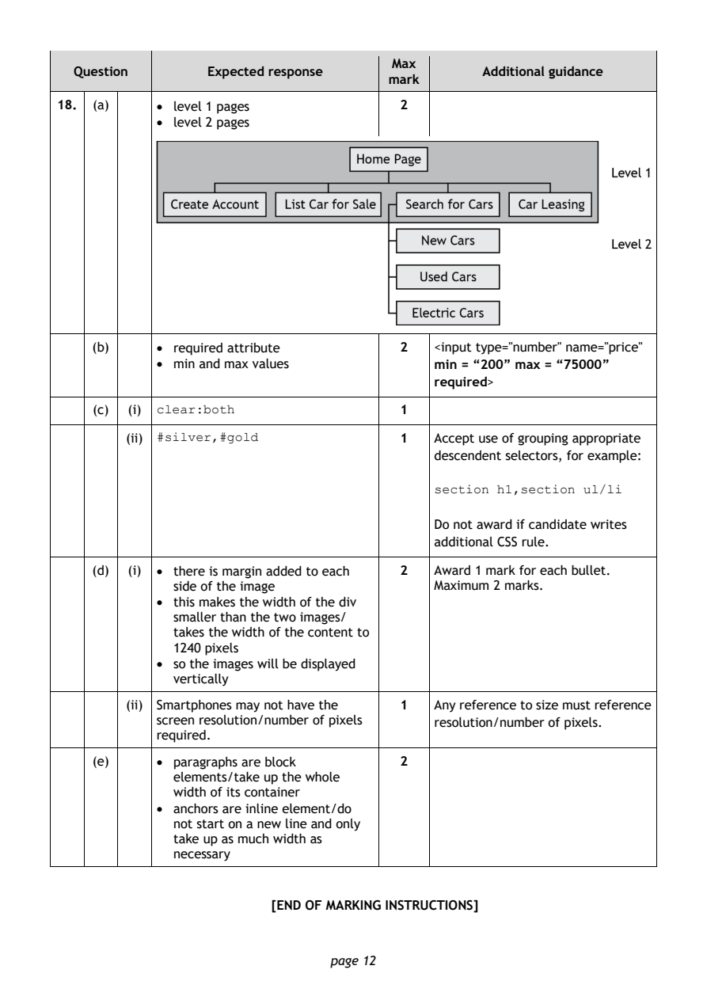
Selectable page text
Max
Question Expected response Additional guidance
mark
18. (a) • level 1 pages 2
• level 2 pages
(b) • required attribute 2 <input type="number" name="price"
• min and max values min = “200” max = “75000”
required>
(c) (i) 1
clear:both
(ii) 1 Accept use of grouping appropriate
#silver,#gold
descendent selectors, for example:
section h1,section ul/li
Do not award if candidate writes
additional CSS rule.
(d) (i) • there is margin added to each 2 Award 1 mark for each bullet.
side of the image Maximum 2 marks.
• this makes the width of the div
smaller than the two images/
takes the width of the content to
1240 pixels
• so the images will be displayed
vertically
(ii) Smartphones may not have the 1 Any reference to size must reference
screen resolution/number of pixels resolution/number of pixels.
required.
(e) • paragraphs are block 2
elements/take up the whole
width of its container
• anchors are inline element/do
not start on a new line and only
take up as much width as
necessary
[END OF MARKING INSTRUCTIONS]
page 12